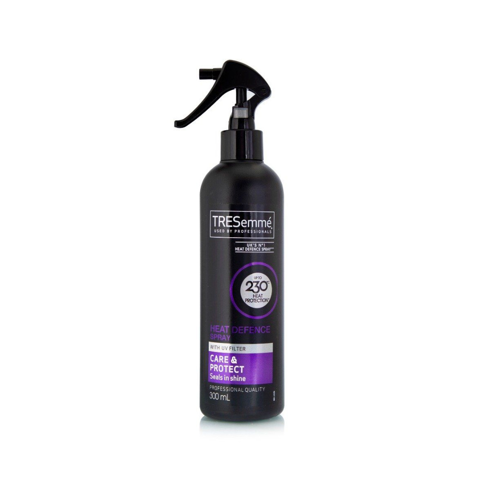

Posted on 5th May 2020
I have been growing my hair now for over 2 years with a few set-backs along the way, and so I would say that there has been a very steep learning curve. It can be frustrating as hair does not grow overnight I think I read the estimate is 6inches growth in a year. Well with this in mind I wanted to do a blog to help others avoid the errors I made early on so that they can have a full head of hair sooner rather than later.
Hair Loss:
Now I have been very lucky in that I have fairly thick hair and there is little or no grey, however in anticipation of possible hair loss as we get older (I believe it is correlated with testosterone levels), I was lucky enough to be put on Bridging hormones over a year ago. There is a wait and assessment before being put on full hormones if you are transitioning, and if you have a concern about hair loss it is best to get on these bridging hormones as they prevent hair loss and can even stimulate regrowth if the stoppage in growth has not been too long a period. They will check with you that you are aware that there is a chance of infertility so if you want children in the future but you want to proceed; they recommend you keep some of your DNA / Sperm as a solution in the event of infertility. I believe they can provide further information at NHS. I had chosen not to and so have no experience to pass on that particular area.
Hair Care:
Now one of the first errors I made was in how I washed and dried my hair. I did not adjust the manner in which I did this from when I had short hair. As a young male we are conditioned to be quick and efficient with drying of hair, this would mean quite rigorous drying with a towel and additionally when washing hair in the shower no extra care needing to be taken. I went through a phase where I was showering and handfuls of hair were coming out every day, and on top of that when drying and combing my hair I was losing further hair. I noticed something was not right as my ponytail was getting thinner and thinner. I learnt to wash my hair completely different as the ease of pulling hair is multiplied due to its length. I would not run my hands through my hair in the shower but gently wash with care. Secondly I would not rub dry I would tap dry with a towel to absorb most of the moisture before using a hair dryer. I have now noticed since making these conscious changes that hair loss is minimal and I am starting to get the thickness back in my hair.
Hair Care Products
I have been using Tresemme shampoo and conditioner, leaving the conditioner in as a long as possible to be absorbed and have found these product to be great in getting my hair soft. There are other products I would like to try but for now I am satisfied with my selected products. I hair dry and also use hair straighteners. Now this can be time consuming but for me particularly at this moment my hair can be quite frizzy and have an untidy appearance, possibly due to all the different hair lengths, and so I use the hair straighteners. The thing to be aware of though is constant heating of the hair can cause damage, but there is a product called heat protector (I currently use Tresemme Heat Defence Spray as per the picture), which can guard against this. I spray my hair just before using the hair dryer and then again before using the straightening irons.
I hope this has been helpful, and please drop me a line if you have any questions or anything you would like to add to help others. Until next time thank you for reading stay positive and keep your eye on the life you wish to create for yourself.
Natasha
xxx
If you would like to donate to facilitate new content please click the button below
Contact Details: lifetogo@live.co.uk